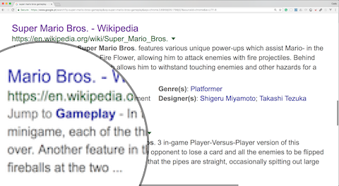

Built for WordPress and Medium
Anchor Links was created with writers and bloggers in mind. It is the easiest way to add Table of Contents and Footnotes into WordPress and Medium posts.
SEO-Friendly
Anchor Links creates SEO-friendly jump to section links, a feature that automatically appears on Google search results.
